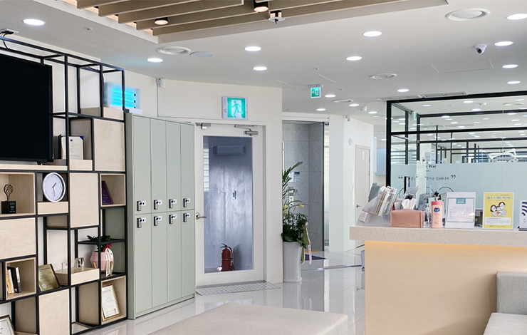
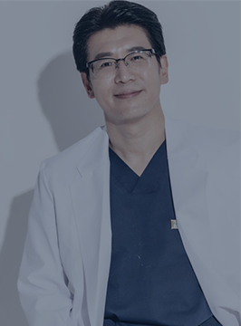

Gangbukye dental clinic’s Special
강북예치과의 특별함
- 
-
A competent specialist with over 20 years ' experience
20년 이상의 경력을 갖춘 실력있는 전문의오랜 경력의 풍부한 경험을 바탕으로 개인별 특성을 고려한
맞춤형 치료계획을 수립하여 환자의 치아 및 전반적인 건강상태를
꼼꼼하게 확인하고 최적의 치료를 설계해드리겠습니다.
-
Having one's own facility in the hospital
병원 내 자체기공실 보유병원 내 자체 기공실을 보유하고 있으며 빠르고
정확한 보철물 제작이 가능합니다.
전문적인 임상기술을 통해 환자에게 신뢰받는 진료를 약속하며
최신의 임상장비와 쾌적한 진료환경을 유지합니다.
2002년부터의 노하우, 강북예치과병원이 증명합니다.
-
Since
2002
-
2021년 총 내원환자
37,351
-
2021년 임플란트 식립 개수
854
-
2021년 교정상담 환자수
223
수준높은 진료, 정직한 진료를
약속드립니다.
-
#수준높은 진료
-

#정직한 진료
-
#디지털 치과
“치아가 불편할 때 편안한 치과가 되고 싶습니다.”
강북예치과의원은 자연치아를 살리는 치료,
치과란 두렵고 부담스러운 곳이 아닌 편안한 경험을 드릴 것을 약속드립니다.